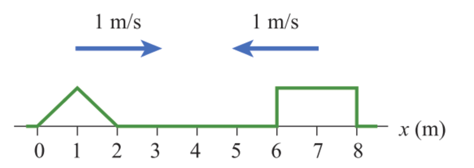

ชื่อ
เลขที่
ห้อง
กลุ่ม
1 ป้ายส่วนประกอบของคลื่น
พิจารณารูปคลื่นไซน์ด้านล่าง แล้วเลือกชื่อส่วนประกอบที่ตรงกับตำแหน่ง A–F
A = -- เลือก -- ความยาวคลื่น สันคลื่น ท้องคลื่น แอมพลิจูด การกระจัด แนวสมดุล
B = -- เลือก -- ความยาวคลื่น สันคลื่น ท้องคลื่น แอมพลิจูด การกระจัด แนวสมดุล
C = -- เลือก -- ความยาวคลื่น สันคลื่น ท้องคลื่น แอมพลิจูด การกระจัด แนวสมดุล
D = -- เลือก -- ความยาวคลื่น สันคลื่น ท้องคลื่น แอมพลิจูด การกระจัด แนวสมดุล
E = -- เลือก -- ความยาวคลื่น สันคลื่น ท้องคลื่น แอมพลิจูด การกระจัด แนวสมดุล
F = -- เลือก -- ความยาวคลื่น สันคลื่น ท้องคลื่น แอมพลิจูด การกระจัด แนวสมดุล
2 คลื่นตามยาว vs คลื่นตามขวาง (สปริง)
3 จับคู่คำศัพท์กับนิยาม (8 ข้อ)
เขียนตัวเลขคำศัพท์ (1–8) หน้าความหมาย/นิยามที่ตรงกัน
4 จัดกลุ่มชนิดของคลื่น
ทำเครื่องหมายถูกในคอลัมน์ที่ตรง (ทั้ง 2 แกน: กล/แม่เหล็กไฟฟ้า และ ตามยาว/ตามขวาง)
คลื่น คลื่นกล คลื่นแม่เหล็กไฟฟ้า ตามยาว ตามขวาง
7 ความเร็ว–ความเร่งที่จุด A–D บนคลื่น
กำหนด A (แอมพลิจูด) = 5 m, f = 2 Hz · จุด A อยู่บนสันคลื่น · B อยู่แนวสมดุลกำลังเคลื่อนลง · C อยู่บนท้องคลื่น · D อยู่ระหว่างสมดุลกับสันคลื่น
กำหนด: ω = 2πf · ให้เลือกนิพจน์ที่ตรงกับค่าในแต่ละข้อ (0 / ±Aω / ±Aω² / v=fλ)
ความเร็วจุด A =
-- 0 Aω -Aω Aω² -Aω² v=fλ
ความเร็วจุด B =
-- 0 Aω -Aω Aω² -Aω² v=fλ
ความเร็วจุด C =
-- 0 Aω -Aω Aω² -Aω² v=fλ
ความเร็วจุด D =
-- 0 Aω -Aω ω√(A²−y²) -ω√(A²−y²) v=fλ
ความเร่งจุด A =
-- 0 Aω Aω² -Aω² ω²y -ω²y
ความเร่งจุด B =
-- 0 Aω Aω² -Aω² ω²y -ω²y
ความเร่งจุด C =
-- 0 Aω Aω² -Aω² ω²y -ω²y
ความเร่งจุด D =
-- 0 Aω Aω² -Aω² ω²y -ω²y
ความเร็วคลื่น =
-- 0 Aω Aω² v=fλ v=√(T/μ)
ความเร่งคลื่น =
-- 0 Aω Aω² -Aω² ω²y
8 เปรียบเทียบเฟสจากกราฟ y-x และ y-t
9 วาดรูปคลื่นรวมที่เวลา t = 3 s (การซ้อนทับของพัลส์ 2 ขบวน)
พัลส์สองขบวนเคลื่อนที่เข้าหากันด้วยอัตราเร็ว 1 m/s · พัลส์สามเหลี่ยม (ซ้าย) เคลื่อนไปทางขวา · พัลส์สี่เหลี่ยม (ขวา) เคลื่อนไปทางซ้าย · วาดรูปคลื่นรวมที่ t = 3 s (พัลส์ทั้งสองซ้อนทับบริเวณ x = 3–5 m)

t = 0 (คลื่น 2 ขบวนที่กำหนด)
t = 3 วินาที (วาดรูปคลื่นรวมที่เวลา 3 s · พัลส์สามเหลี่ยมเลื่อนขวา 3 m · พัลส์สี่เหลี่ยมเลื่อนซ้าย 3 m · จะซ้อนทับกันบริเวณ x = 3–5 m)
10 เปรียบเทียบ v₁ กับ v₂ บนเชือก 2 เส้น
เชือก 1: T₁ = 9 N, μ₁ = 1 kg/m · เชือก 2: T₂ = 4 N, μ₂ = 1 kg/m · ความถี่ต้นกำเนิดเท่ากัน
เชือก 1 (T₁=9 N)
เชือก 2 (T₂=4 N)
v₁ -- > < =
f₁ -- > < =
T₁ -- > < = (แรงตึง)
μ₁ -- > < =
λ₁ -- > < =
T(คาบ)₁ -- > < =
11 จัดลำดับภาพการสะท้อน · ปลายตรึง vs ปลายอิสระ
ลากภาพ A–J ลงในช่องว่างให้ถูกต้อง · แยกเป็น 2 ลำดับ: การสะท้อนปลายตรึง (5 ภาพ) และการสะท้อนปลายอิสระ (5 ภาพ) · พิจารณาจากกำแพง (|) / ห่วง (○) และทิศของพัลส์
การสะท้อนปลายตรึง:
→
→
→
→
การสะท้อนปลายอิสระ:
→
→
→
→
🔄 ล้างทั้งหมด
12 การสะท้อนคลื่นผิวน้ำบนผิวสะท้อน
ระบุชนิดผิวสะท้อนและชนิดหน้าคลื่นตกกระทบ · แล้ววาดหน้าคลื่นสะท้อนบนแคนวาส (สีแดง)
13 การหักเหของคลื่นในเส้นเชือก · เลือกคำตอบให้ถูกต้อง
จากการหักเหของคลื่นในเส้นเชือกต่อไปนี้ จงเลือกคำตอบให้ถูกต้อง
(ก) พัลส์ขึ้น (ยอดคลื่น) เคลื่อนที่จาก เชือก 1 (บาง) → เชือก 2 (หนา)
ภาพใดแสดง พัลส์สะท้อน + พัลส์หักเห ได้ถูกต้อง?
(ข) พัลส์ขึ้น (ยอดคลื่น) เคลื่อนที่จาก เชือก 1 (หนา) → เชือก 2 (บาง)
ภาพใดแสดง พัลส์สะท้อน + พัลส์หักเห ได้ถูกต้อง?
14 เติมคำในรูปและสมการสเนลล์ให้ถูกต้อง
ส่วน (ก) ป้ายส่วนต่าง ๆ ของการหักเห
น้ำลึก
น้ำตื้น
1
2
3
4
5
6
7
8
9
10
เลือกคำศัพท์ที่ตรงกับตำแหน่งหมายเลข 1–10 บนรูป
ส่วน (ข) กฎของสเนลล์ · เติมช่องว่าง
v₁ / v₂ =
-- sinθ₁ sinθ₂ λ₁ λ₂ f₁ f₂ θ₁ θ₂ -- sinθ₁ sinθ₂ λ₁ λ₂ f₁ f₂ θ₁ θ₂ -- sinθ₁ sinθ₂ λ₁ λ₂ f₁ f₂ θ₁ θ₂ -- sinθ₁ sinθ₂ λ₁ λ₂ f₁ f₂ θ₁ θ₂
คลังคำ: sinθ₁, sinθ₂, λ₁, λ₂, f₁, f₂, θ₁, θ₂
15 น้ำลึก / น้ำตื้น · เลือกคำให้ถูก
(1) ในบริเวณน้ำลึก λ มีค่า
-- มาก น้อย -- สูง ต่ำ -- สูง คงที่ ต่ำ -- มาก น้อย
(2) เมื่อคลื่นเคลื่อนจากน้ำตื้น → น้ำลึก : v จะ
-- เพิ่ม ลด -- มาก ลด -- คงที่ เปลี่ยน -- เพิ่ม ลด
(3) มุมวิกฤติเกิดเมื่อคลื่นเคลื่อนจาก
-- ลึก→ตื้น ตื้น→ลึก -- วิกฤติ 90° -- วิกฤติ 90°
(4) หน้าคลื่นทำมุมกับรอยต่อ 30° → มุมตกกระทบ =
-- 30° 60°
(5) ทิศคลื่นทำมุม 20° กับรอยต่อ → มุมตกกระทบ =
-- 20° 70°
17 จัดกลุ่มภาพและตัวแปรต่อไปนี้ให้ถูกต้อง
พิจารณาแต่ละภาพแล้วเลือกประเภทคลื่น ลักษณะแหล่งกำเนิด ผลต่างทางเดิน และเงื่อนไขแนวปฏิบัพ/บัพ
ภาพ
ประเภท
แหล่งกำเนิด
ผลต่าง (1)
ผลต่าง (2)
ผลต่าง (3)
เงื่อนไขปฏิบัพ
เงื่อนไขบัพ
18 คลื่นนิ่ง · หา λ หรือ L จากจำนวนลูป
แต่ละกรณีแสดง snapshot หลายภาพทับซ้อนกัน (envelope สีน้ำเงิน) · เชือกทั้งสองปลายถูกตรึง — จุดดำที่ปลายทั้งสองคือ บัพ (node) · อ่านจำนวนลูปแล้วเติมค่าที่ขาดหายไป (ใช้สูตร L = n·λ/2)